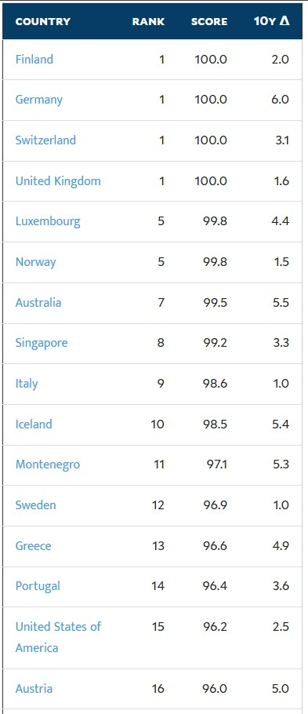

일본이 자랑하는 "안전하게 수돗물을 마실 수 있는 국가" 순위를 알아보자
채찍피티에게 물어보니 아래 링크를 근거로 순위를 매겨주더라고
예일대학의
Yale 2024 Environmental Performance Index(EPI)자료를 근거로
180개국의 국가별 위생&식수 순위지표를 바탕으로 작성된 리스트가 있다.
일본의 자랑인 수돗물이 얼마나 깨끗한지 알아보도록 하자.
링크는 여기
https://epi.yale.edu/measure/2024/H2O

- 스코어 100점
공동 1위 4개국
핀란드, 독일, 스위스, 영국
- 스코어 99.8점
공동 5위 2개국
룩셈브루크, 노르웨이
------중략------
- 스코어 96.2점
15위 미국
------중략------
- 스코어 90.1점
27위 대한민국
------중략------
- 스코어 78.3점
40위 보스니아
- 스코어 78.1점
41위 일본
그만 알아보도록 하자....
참고로 인도는 스코어 25.4점으로 143위
꼴등 180위는 스코어 4.4점으로 차드가 장식하였다
댓글
수집 당시 댓글 45개
까랑까롱 · 3 일 전
먹는 물 자료는 아닌가 독일에서 생활했는데 공감 못하야..
애무심육 · 3 일 전
독일살았는데 저건 말이안됨 아무도 수돗물안마심
번좋음 · 3 일 전
독일이 브리타 유명하긴 한데, 맹물맛 싫어하는 경우라 그렇고. 다들 그냥 수돗물 마시는데
오창섭의건드림 · 3 일 전
한일이 저나라들보다 훨 좋음 ㅋㅋ 핀란드는몰겠네
이거보인다면기분탓임 · 3 일 전
미국에서 부터 자료가 신뢰도 좆엉터리함
왼쪽엄지발가락 · 3 일 전
석회수 꺼져
4829571 · 3 일 전
억지 헛소리 사각지대 가면 쟤네들 엉망임
나꼬 · 3 일 전
한국에서 수돗물 국뽕빨때마다 등장하는 서방국가 석회수는 마셔도 인체에 1도 해롭지않고 미네랄 덩어리라 오히려 좋은거임 유럽가서 한국에서 하던것처럼 석회수 어쩌구 욕하면 병신 취급받으니까 주의해야함 과장 좀 보태서 거의 선풍기 틀고자면 죽는다 시즌2급임
AnanasPizza · 3 일 전
유럽애들 키가 큰게 어릴때부터 석회수로 칼슘섭취해서라더라
일연속똥쌈 · 3 일 전
한국인은 마그네슘도 ㅈㄴ 부족함 ㅋㅋ
midnightfor · 3 일 전
좋은지 어쩐지는 모르겟는데 일단 가서 마시면 물갈이 뒤지게 함 신행가서 조심한다고 했다가 현지 숙소에서 기깔나게 타준 아침식사에 얹은 커피 먹었다가 신행때 와이프옆에서 침대에 지렸음
브리스코 · 3 일 전
ㅋㅋㅋㅋㅋㅋㅋㅋㅋㅋㅋㅋㅋㅋㅋㅋㅋㅋㅋㅋㅋㅋㅋㅋㅋㅋㅋㅋㅋㅋ 진짜 개 꿀잼썰이네 ㅋㅋㅋㅋㅋ 와이프가 친구들이 신행 어땠냐고 물어보면 썰 풀생각에 입맛이 싹 돌 듯 ㅋㅋㅋㅋㅋ
눈팅했음 · 3 일 전
머리감으면 머릿결 좃같다 이런거면 모를까 석회수로 수질이 어쩌고 못마신다 이러면 진짜 개쪽당함 ㄹㅇ 어디 필터업체들 바이럴에 속아서 수도관 구린 동남아 수질이랑 비교하고 있는게... 그냥 수돗물 마시는게 일반적이고, 그나마 필터 설치하는 가정은 차 마시려고 그런 경우가 많음. 이런건 우리도 수돗물이 문제가 아니라 녹물이 문제이듯 수도관 상태 같은게 더 관건이지 석회수는 음용 수질 여부랑 아무런 관련이 없음...
절대감자초코칙촉 · 3 일 전
우리 와이프도 본인피셜 석회물로 머리 감을 때가 머릿결이 더 좋다 함. 어릴 때 유럽에 오래 살다 온 게 영향이 있을까 싶긴 한데 모르겠네.
awjfj1aw · 3 일 전
석회수가 띠껍긴 해도 먹는다고 죽진 않긴해
momento · 3 일 전
수돗물 가장 깨끗한 나라 스위스, 싱가폴, 대한민국, 일본 이라고 알고 있었는대... 지금 찾아보니 우리나라가 5위던대? 스위스 아이슬란드가 1 2위.
오늘의영화 · 3 일 전
아이슬란드는 진짜 물 좋긴하겠다
오늘도야근이다 · 3 일 전
얼음 녹은물인가?
그게그렇지만은않지 · 3 일 전
갔다왔는데 빙하도 유명하지만 화산 온천도 유명하거든… 그래서 모든 에어비앤비 숙소 수돗물에서 유황냄새=방구냄새나 샤워기도 마찬가지임
오늘의영화 · 3 일 전
ㄱㅅㄱㅅ 근데 아이슬란드 가는 사람들 좀 있구나 한번 가보고싶다
qwasdf · 3 일 전
나는 오로라호텔 1박하고 3주간 캠핑했는데 캠핑장 수돗물은 방구냄시 없었음 ㅋㅋ
오늘의영화 · 3 일 전
영국이 만점?
Fireman · 3 일 전
영국?
AnanasPizza · 3 일 전
브리타 스포츠 들고다니면서 수돗물 받아서 필터해마심
아는거나오면링크달아줌 · 3 일 전
순간 스포츠브라로 읽음 ㅋㅋ
하라쇼 · 3 일 전
물틀면 석회수 콸콸 나오는 유럽 국가들이 탑10에 우루루 몰려있노 ㅋㅋㅋ 좆지랄 개소리 추
Rldydhd · 3 일 전
미국도 동남부랑 플로리다는 수질 존나 좋음. 주변에서도 물갈이 하는사람 못보고 물맛도 존나 깨끗함. 플로리다의 경우 북부지역은 수질, 지하수 퀄리티 존나 좋아서 다른주로 판매 존나 많이 한다더라. 서부는 모르겠음.
곧휴가철이다 · 3 일 전
뭔가 이상하다. 내가 그렇게 유럽 여행을 많이 했는데. .. 정말 뭔가 이상한데 아무도 이야기를 안하고 있어서 내가 이상한 것 같아서 조용히 있어야 겠다. 참고 독일,폴란드,오스트리아,체코, 스웨덴, 프랑스, 스위스 등등 ㅋㅋ 거의 다 다녔는데, ㅋㅋ 나만 물 사먹었고 다녔나 이런 생각이 드네 여기 글들 읽어 보니 ㅋㅋ
시라누이Q · 3 일 전
흠.... 이상한데
일연속똥쌈 · 3 일 전
미국은 뭐냐... 뉴욕 여행가보니 수돗물 맛 개좆같던데
심장입니다 · 3 일 전
우리나라는 수돗물 식수로 사용 안하잖아
Glaswegian · 3 일 전
그럼 유럽에서 브리타 정수기는 왜 그렇게 많이 쓰냐? 생수는 왜 사먹어?
오늘부터우리는 · 3 일 전
우리나라 수돗물 마시면안돼?
이또한지나가리 · 3 일 전
우리나라 수돗물은 정제해서 깨끗함. 다만 아파트경우 노후화된게 문제지
물티슈 · 3 일 전
누가 진짜고 누가 아는척하는거냐 너무 어렵다
일본시골왜노자 · 3 일 전
미국이 저기있는데에서 신뢰성 없는 자료네 뉴욕 살아봤는데 한국 그립더만.
회사에서코고는중 · 3 일 전
차드 정도는 되야 기가차드가
하위헌스 · 3 일 전
뉴비곰 · 3 일 전
저거는 석회질같은것은 평가 대상이 아니라서 저렇게 나오는거야 석회질같은것은 안따지고 세균이나 미생물같은것만 측정해서 나와서 그럼 마시게 좋은물이라는 뜻이 아니라 오염이 덜되었냐 이런것
년차글쟁이 · 3 일 전
영국 런던 살았는데 수돗물에 석회 둥둥 떠다님 물 한그릇 떠놓으면 석회가 둥둥 떠다니다가 얇은 판막처럼 뭉침
헤론 · 3 일 전
유럽쪽이 높은 이유는 석회수가 '먹으면 안되는 물'은 아니기 때문임
딩댕댕딩 · 3 일 전
스위스도 물 틀면 석회 녹은 물이라 뿌옇고 호텔 커피포트 바닥엔 석회가루 날리는데 흠
청사과맛사탕 · 2 일 전
석회수가 오히려 좋은 거임? 걍 여행 가서만 마셔봐서 그런 건가 난 그냥 개좆같던데 맛 그럼 더 좋다는 애들은 유럽 이런데 가면 수돗물 열심히 마시는 거임? 시발... 갈 때 마다 물 사서 마셨는데
푸스로다 · 2 일 전
한국이 저 순위가 말이됨? 공신력은 있는자료냐
SQL · 2 일 전
에비앙 돈주고 사먹는 나라에서 석회수타령은 코미디임